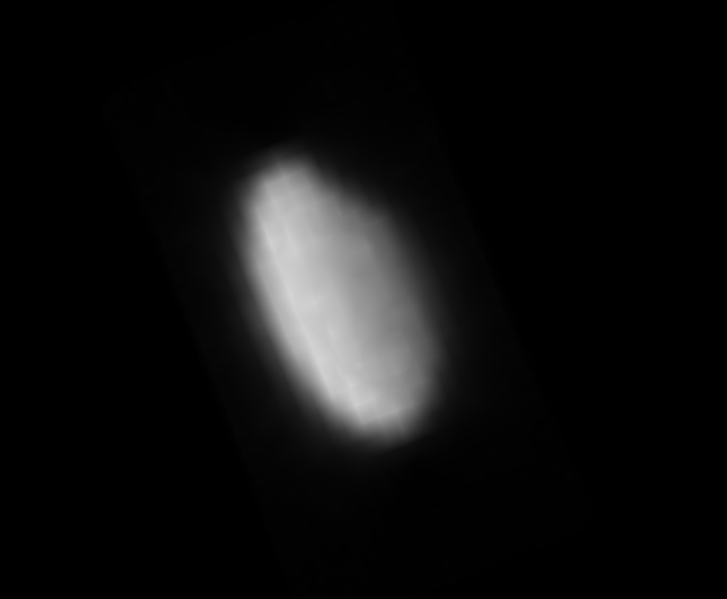
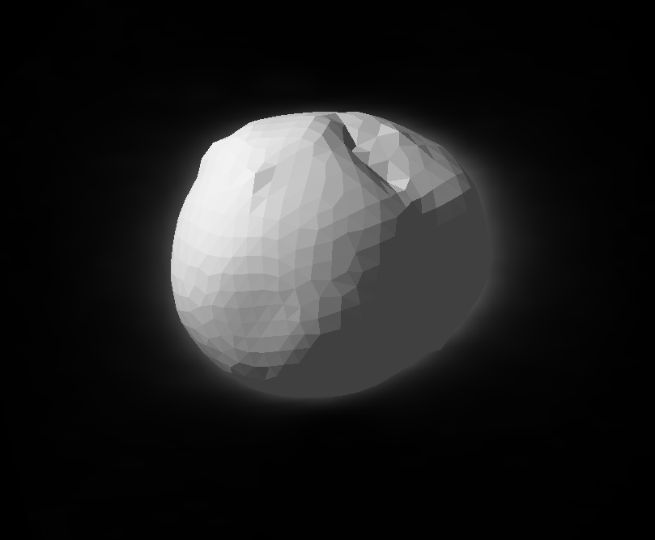
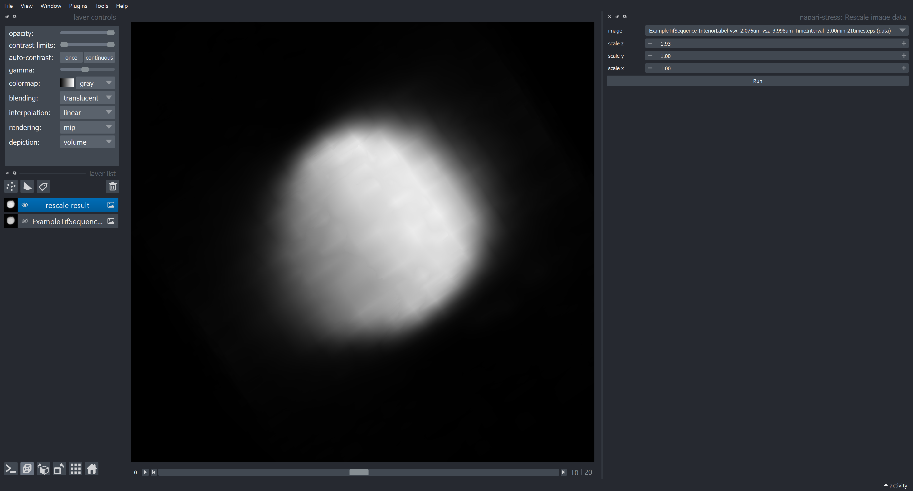
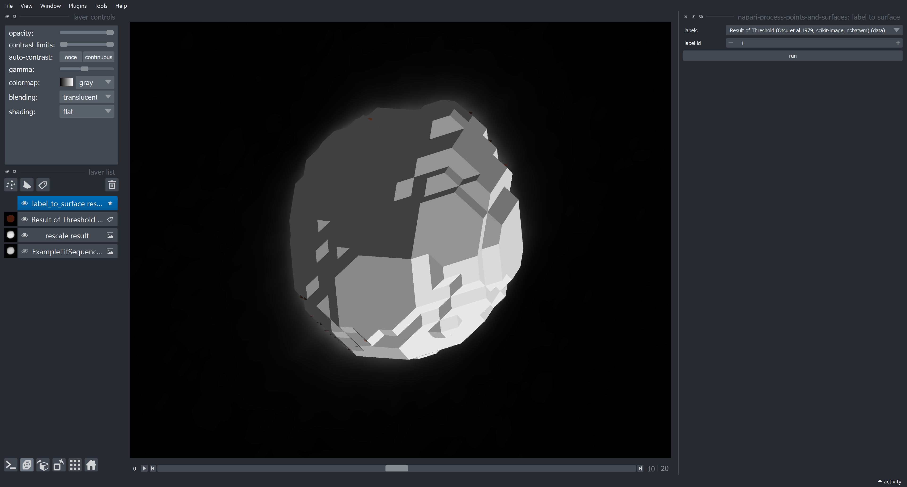
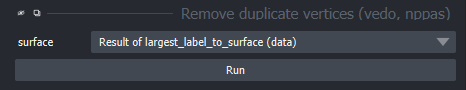

From intensity image to surface
Contents
11. From intensity image to surface#
This tutorial will demonstrate how to convert an intensity image to a surface layer object in Napari. Note: In order to follow this tutorial, please additionally install the package napari-process-points-and-surfaces and napari-segment-blobs-and-things-with-membranes in your environment.
Heterotropic image data |
Resulting surface |
|---|---|
 |
 |
The steps covered in this tutorial involve the following:
Image rescaling: Voxel sizes of 3D data are often not isotropic and need to be rescaled to be suitable for further processing.
Binarization: Thresholding is usually a good first step to obtain a rough idea about the object’s shape.
Surface extraction: We will use the marching cubes algorithm to obtain an initial surface representation.
Surface smoothing: Surfaces obtained with a marching cubes algorithm often look voxel-like, so it makes sense to smooth them a bit.
11.1. Loading data#
First, open your data (can be 3D or 3D+t) in the Napari viewer by drag & dropping your data into the opened viewer. In this tutorial, we will use the exemple data kindly provided in the original stress repository by Gross et al. (2021).
11.2. Rescaling#
For rescaling, use the respective function from napari-stress from the plugin dropdown (Plugins > napari-stress > Rescale image data). In the appearing dropdown, enter the factors by which the image should be rescaled in the respective dimension. In the present dataset, the image dimensions are the following:
Voxel size z: 3.998 \(\mu m\)
Voxel size y: 2.076 \(\mu m\)
Voxel size x: 2.076 \(\mu m\)
To rescale the image to an isotropic voxel size of 2.076 \(\mu m\), the image needs to be enlarge by a factor of \(f = \frac{3.998}{2.076} \approx 1.93\) in the z-direction:

This should produce the following output:

11.3. Binarization#
We will use a simple thresholding method to obtain a binary map of the droplet. To do this, open the napari assistant from the menu Tools > Utilities > Assistant (na). In the appearing panel, click the Binarize panel and select Threshold (Otsu et al 1979, sciki-image, nsbatwm):


This should produce the following output:

11.4. Surface extraction#
We can now extract a surface layer form the binarized image. To do so, use the label-to-surface conversion function from the menu Tools > Surfaces > Create surface from largest label (marching cubes, scikit-image, nppas)):

This should produce the following output:

Note: Marching cubes often creates surfaces with duplicate vertices or faces. These duplicates can impair downstream analysis steps. To prevent this from happening, use the Remove duplicate vertices function (Tools > Surfaces > Remove duplicate vertices (vedo, nppas). The result may look the same as before.

11.5. Smoothing#
To get rid of the voxely look of the surface, we can smooth the surface to get a better approximation of the droplet’s surface, which we assume to be smooth. To do so, use the smoothing function from napari-process-points-and-surfaces from the menu Tools > Surfaces > Smooth (vedo, nppas):

Notice how the output surface becomes progressively more smooth as you increase the number of iterations parameter in the smoothing plugin. The ouput (e.g., for number of iterations = 15) should look like this: